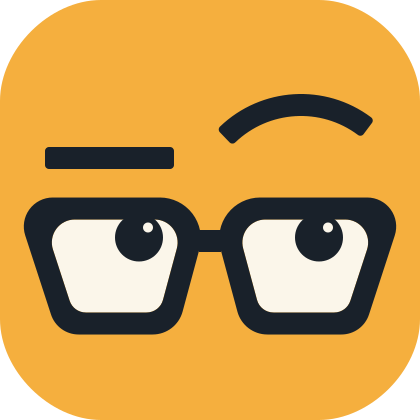

FootballScouted: type, wordmark and colour
1Heading and body fonts
Round 2. Found by filtering Google Fonts' own data (1,961 families) to heavy sans and display faces outside the top ~150, dropping the fonts AI tools reach for by reflex (Inter, DM Sans, Space Grotesk, Outfit, Manrope, Figtree, Unbounded and the rest) and anything too round, then judging 44 of them by eye on the hub art: font-sweep.html. Rank is Google's popularity position; higher is rarer. Each card shows the wordmark, clipboard header, task rows, button and tapes. Press Use below to carry one into sections 2 and 3.
2Wordmark
Your two picks (two-tone, glasses for oo) and the glasses with the icon’s brows, alone and combined with the two-tone. Each in the hub top bar (on ink) and on a share card (on paper). Switch the font and the case for all four at once.
Icon and wordmark colourTreatment 4 in Valley Sans, the icon recoloured from its own paths. Each pair shown on a dark bar, on paper, and as an app icon at 64, 32 and 16 px.
3Two primaries and one attention colour
Primary A carries the big surfaces (top bar, clipboard sheet), primary B the second surface (task rows), and the attention colour appears only three times: the button, the Next chip and the Next flag on a tape. The clipboard sheet is repainted flat here, as a rebaked one would be. Font follows your pick above.
- The art is warm: orange cork, wood, red kits and pins. Attention works by being the odd one out, so a warm attention colour (red, orange) blends in and a cool or much lighter one stands apart. Blue is orange’s opposite on the colour wheel; yellow is far lighter than the cork (2.4:1). Red is close to the art in both hue and lightness (1.1:1 against cork).
- Every state still has its own word and shape (tick, strike, Next with an arrow), so no option leans on hue alone.
- Changing the primaries away from navy means rebaking the clipboard (and later the art plate) to match. Higgsfield credits; one variant, after you pick.